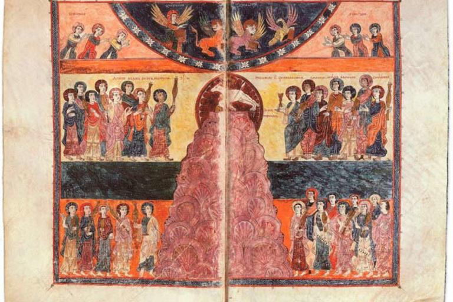

Visita · Girona
Conserva notables obres d'art religiós, com ara el còdex del Beatus (s. X), el cèlebre Tapís de la Creació (s. XII), un conjunt valuós d'escultura, pintura i argenteria gòtiques i el retaule…